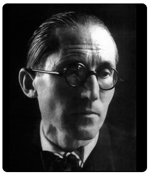

Charles Édouard Jeanneret-Gris, llamado Le Corbusier (6 de octubre de 1887 - 27 de agosto de 1965) fue un arquitecto, urbanista, teórico de la arquitectura, diseñador y pintor suizo, nacionalizado francés. Es considerado uno de los padres de la arquitectura moderna (junto con Frank Lloyd Wright, Walter Gropius y Ludwig Mies van der Rohe), y uno de los arquitectos que mayor influencia han tenido en el siglo XX y en general, en toda la Historia de la arquitectura.
Nació en La Chaux-de-Fonds, en la Suiza francófona con el nombre de Charles Edouard Jeanneret-Gris. A los 29 años se trasladó a París donde adoptó el seudónimo "Le Corbusier", el apellido de su abuelo materno. Su padre se dedicaba a lacar cajas de relojes para la industria relojera de su ciudad natal, y su madre fue pianista y profesora de música.
En 1900 Le Corbusier comenzó su aprendizaje como grabador y cincelador en la escuela de arte de La Chaux-de-Fonds, en Suiza. Uno de sus profesores, Charles L'Eplattenier, le orientó hacia la pintura y después hacia la arquitectura. En 1905 diseñó su primer edificio, una casa unifamiliar para un miembro de la Escuela de Arte, la Villa Vallet. En los próximos diez años hizo numerosos edificios, que no obstante todavía no llevan su sello característico posterior, y que él mismo no incluyó en el registro de sus obras.
Ya en París, trabajó durante 15 meses en el estudio de Auguste Perret, arquitecto pionero en la técnica de construcción en hormigón armado. A continuación viajó a Alemania para estudiar las tendencias arquitectónicas de ese país. Allí trabajó en la oficina de Peter Behrens, donde se estima que puede haber coincidido con Ludwig Mies van der Rohe y Walter Gropius, quienes también trabajaron ahí. Visitó también Estados Unidos, donde se familiarizó con la obra de Frank Lloyd Wright, que por aquel entonces comenzaba a ser apreciada en Europa. El año 1911 lo dedicó por completo a viajar. Desde Viena fue a Rumanía, Turquía, Grecia e Italia y a su regreso fue profesor durante dos años en el departamento de arquitectura y decoración de la Escuela de Arte de París.
En 1922 Le Corbusier abrió un despacho de arquitectura con su primo Pierre Jeanneret, con el cual mantuvo su asociación hasta 1940. Inicialmente los dos diseñaron casi exclusivamente edificios residenciales. Uno de sus grandes proyectos de estos años, en este caso como urbanista, es su diseño conceptual de una ciudad de tres millones de habitantes, la Ville Contemporaine.
En octubre de 1929 Le Corbusier dictó en Buenos Aires un ciclo de diez conferencias, invitado por la Asociación Amigos del Arte. En este viaje también visitó Río de Janeiro, Asunción y Montevideo.
Le Corbusier fue un trabajador incansable. Realizó innumerables proyectos, muchos de los cuales nunca llegaron a realizarse, pero que marcaron a generaciones posteriores de arquitectos.
Difundió también sus ideas urbanas a través del CIAM (Congreso Internacional de Arquitectura Moderna) cuyo documento resultante es La Carta de Atenas. Sin embargo, fue únicamente en Chandigarh, India, donde pudo hacerlas realidad.
El 27 de Agosto de 1965, desobedeciendo las indicaciones de su médico, Le Corbusier fue a nadar a Roquebrune-Cap-Martin, en el Mediterráneo francés. Fue encontrado muerto por unos pescadores, presumiblemente de un ataque al corazón.

Retrato de Le Corbusier